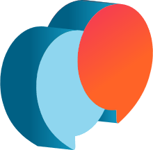
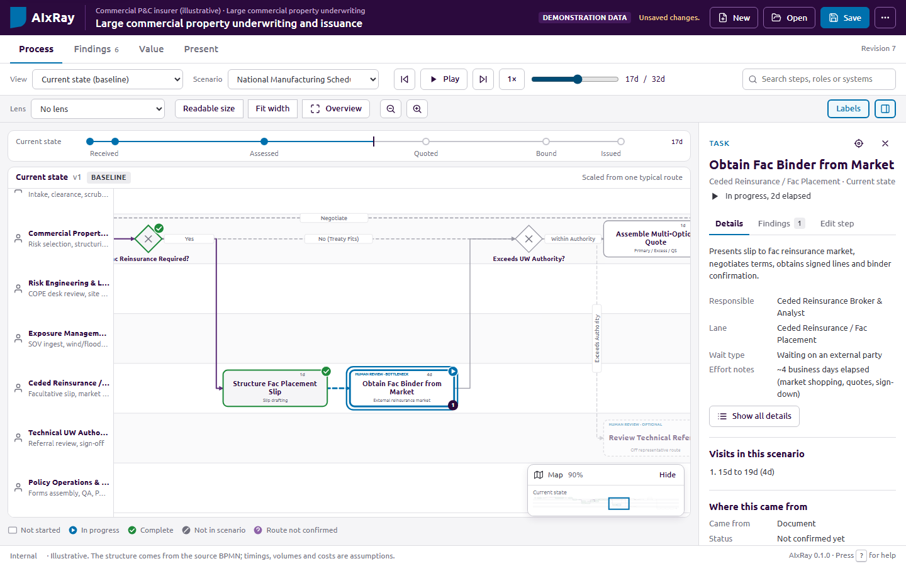
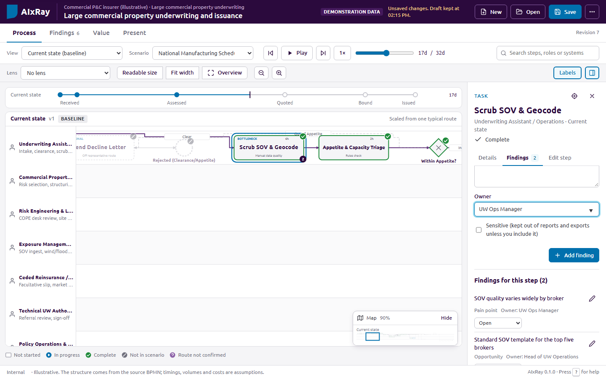
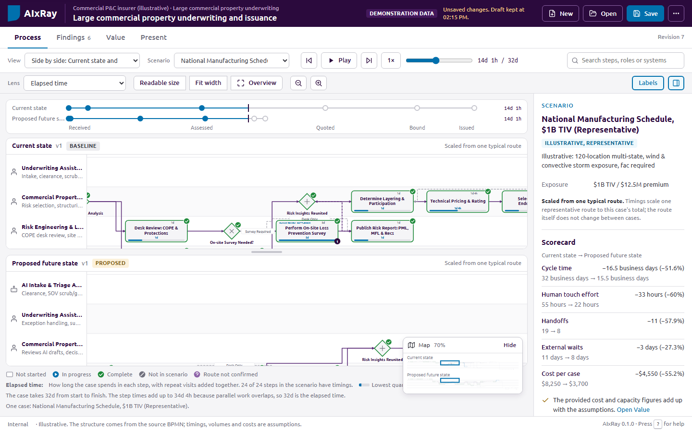
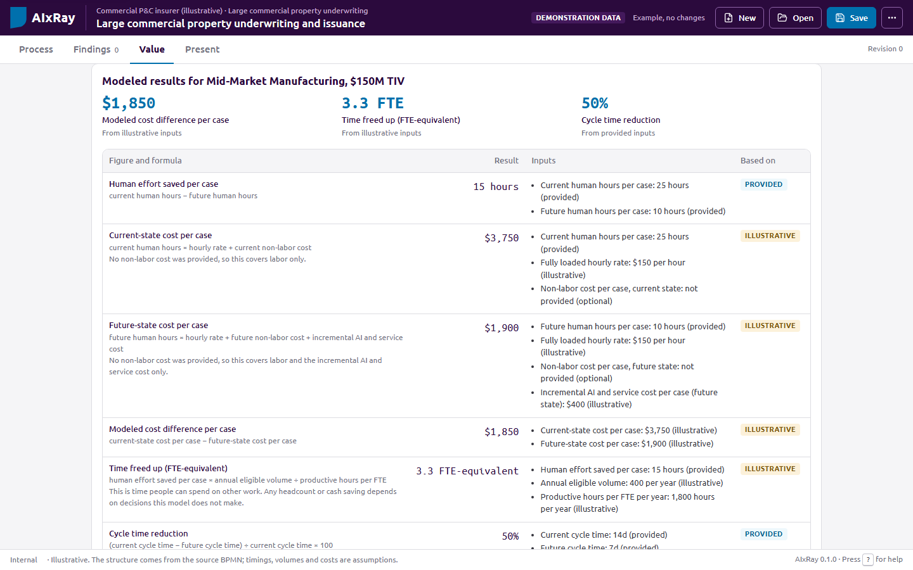
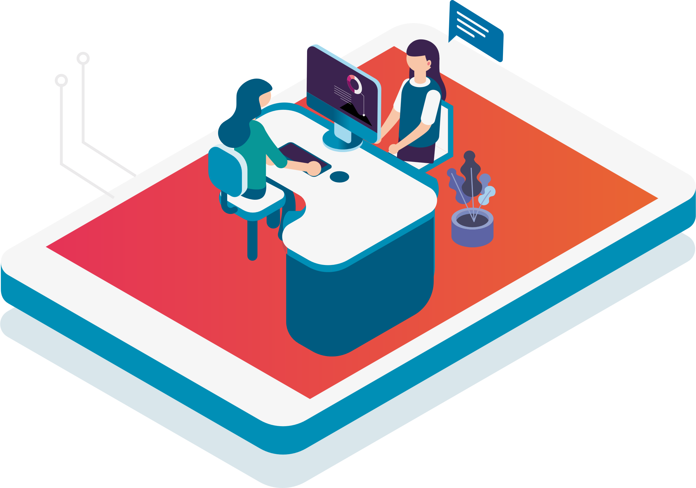

Many AI conversations stall because nobody can point to where the work happens, who does it and what a change would be worth.
In a Jump Start, we put one of your processes under AIxRay and work through it with the people who run it. The same model carries the discussion from today's process to a future design and a first estimate of its value.
Understand. We build a model of today's process from your documents and the people in the room, then play real cases through it, exceptions included.
Reimagine. We design a future version, trying simpler fixes first and using supervised AI where it earns its place, with approvals and fallbacks written down.
Evaluate. We estimate cycle time, effort and cost from assumptions everyone can see and challenge, and agree what to validate next.
You leave with an agreed current-state model, a future-state design, a prioritized list of opportunities and a pilot brief with named owners.
Before deciding where AI fits, a leadership team needs the same picture of how work moves today. Three things usually get in the way.

How work really moves, where it waits and how exceptions are handled often lives in people's heads and in documents that disagree with each other.
Without a shared view of the steps, it is hard to say where AI helps, where a simpler fix would do, and where people need to stay in control.
Benefit figures are hard to trust when nobody can see the volumes, effort and costs behind them, or which of those were measured and which were guessed.
Plays a case through the process step by step, on one screen the whole room can follow.
Records pain points, questions and ideas on the step where they come up.
Compares today's process with a future design on the same clock.
Shows every figure with its formula and inputs, labeled by how much we know about them.
Runs in the browser from local files, with no server, account or installation.

The workshop runs as three conversations, understand, reimagine and evaluate, with preparation before and a clear hand-over after.
We gather your procedures, maps and notes, plus a system event log where one exists, and draft a first model of the process.
We walk routine cases and exceptions with the people who do the work, correct the model live and capture findings at each step.
We try removing, simplifying and connecting steps before adding automation and AI, and design the controls for each AI step.
We model cycle time, effort and cost against today's baseline, see which assumptions matter most and rank the opportunities.
We agree a checkpoint, produce the pilot brief and report, and send a review form to stakeholders who were not in the room.
AI-drafted model, reviewed by our team
Walkthrough and findings at each step
Future alternatives and automation designs
Value, sensitivity, matrix and waves
Pilot brief, report, review form and exports

Start from what you have. Procedures, process maps, slides, notes or BPMN files. AI can draft the first model; our team reviews it before you see it.
Walk the routes. The routine case first, then the exceptions, choosing each branch with the participants.
Capture at the step. Pain points, open questions and decisions are recorded where they arise, each with an owner.
Keep evidence apart from belief. Each step shows where it came from and whether you have confirmed it.
Simpler changes first. Each opportunity asks whether removing, simplifying, standardizing or connecting systems would do the job before automation or AI.
A baseline that cannot drift. Today's process is locked. Every future alternative records which steps changed, were added or removed, and why.
Side by side, on one clock. Both versions play together, so the room sees where time, handoffs and waits fall away.

For each step where automation or AI does the work, we write down how it is supervised before it goes anywhere near a pilot.
Approvals, permissions, escalation and test criteria stay attached to the design and flow into the pilot brief and its acceptance criteria.
| Design element | Example: AI checks application completeness |
|---|---|
| Trigger | Application received |
| Rules and limits | Check required fields only. Do not approve applications. |
| Approval | Case handler approves every external message. |
| Fallback and escalation | Return to manual intake when extraction fails. Escalate uncertain cases to the duty manager. |
| Test criteria | Flag every missing required document in the agreed test set. |
| Owner | Operations lead |
Every figure shows its formula and inputs. Each input is labeled illustrative, provided, measured or confirmed.
A missing input leaves the result blank rather than assuming zero.
A sensitivity view shows which inputs move the result most, which tells us what to validate first.

Each opportunity carries a small business case: effort saved, cases affected and cost to deliver. That lets us compare them on the same terms.
Quick wins and the first supervised AI pilot, with acceptance criteria and owners.
Changes that depend on the pilot's results or on connecting systems.
Larger redesigns, kept visible with their open questions.
Each wave shows a running total of its modeled value, built from the same formulas as the individual opportunities.
Workshop estimates are a starting point. If your workflow, ticketing or core system can export an event log, the same model can show how the process actually runs.
How many cases reach each step, how long each step takes and which paths cases follow, shown next to what the workshop captured.
A log from before a change and one from after are compared step by step, with caveats such as seasonality and volume mix stated alongside.
Counts and times per step. Individual events, case IDs and the names of people in the log are not stored.
Agreed with the people who run the process, with its sources and open questions.
One or more alternatives compared with the baseline, each change with its reason.
Ranked by value against effort and grouped into now, next and later.
Automation designs with their controls, acceptance criteria and owned actions.
A printable summary, and a form that lets stakeholders confirm or dispute each step.
A PowerPoint deck, a BPMN 2.0 diagram, and a Jira, Azure DevOps or Excel backlog.
Opened from disk, AIxRay makes no network requests. The saved project file is the record, stored like any other client document.
AI runs only on approved commercial plans with the project lead's approval. Every AI draft stays out of reports and exports until a person reviews it.
Findings marked sensitive are left out of reports, review forms and exports unless someone deliberately includes them.
Steps and selected findings, with no figures, sources or notes. The form sends nothing anywhere; answers come back as a file.
Where material includes personal or otherwise regulated data, we agree the handling with your data protection officer before the workshop.
A candidate process with a clear start, a clear end and a business owner who wants it improved.
The right people in the room: those who run the work day to day, and a decision maker for the checkpoint.
The evidence you already have: procedures, process maps, slides, notes or BPMN files, and a system event log if one is available.
Rough figures: volumes, effort, waiting times and costs. Estimates are fine; we label them as assumptions and test which ones matter.

Choose a candidate process together, based on volume, pain and appetite for change.
Confirm participants and dates for the Jump Start sessions.
Share the material you have so we can prepare a first model before we meet.